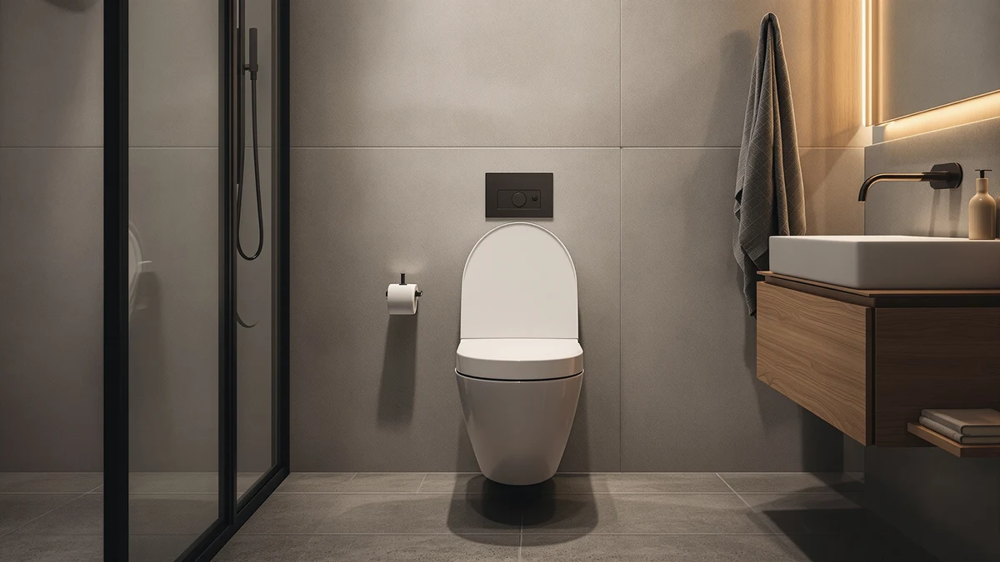

Mayfair Linden Slow Close Review (2026): Worth It?
Prices and picks verified as of September 2026. Independent, reader-supported reviews.


Quick Answer
Our mayfair linden slow close review found an elongated, slow-close seat priced at $91.98, built with a plastic seat top and a wood-based hinge core. It costs more than the three alternatives compared here, so the case for buying it comes down to Mayfair's name rather than a lower price.
Our pick: Mayfair Linden Slow Close Toilet ($91.98) Check Price on Amazon
Bottom line: our top pick is the Mayfair Linden Slow Close Toilet Seat at $91.98.
Things to Know Before You Buy
- At $91.98, this mayfair linden slow close review found it to be the most expensive of the four elongated, slow-close seats compared, ahead of the Duravit ($89.98), the TOTO SoftClose ($83.60) and the DryLabs Heavy Duty Commercial Open Front ($79.99).
- The shape is elongated only, so confirm your bowl shape before ordering if you aren't sure which one your toilet takes.
- The seat combines a plastic top with a wood-based hinge core rather than solid wood, a common build for mid-priced slow-close seats.
- Mayfair is one of the more established names in slow-close hardware, which matters here since the listing does not publish a rating or review count to check against.
- If price is the deciding factor, the DryLabs Heavy Duty Commercial Open Front covers the same slow-close concept for nearly $12 less.
This mayfair linden slow close review breaks down whether the $91.98 elongated seat is worth its price against three lower-priced alternatives from Duravit, TOTO and DryLabs. Mayfair prices the Linden higher than all three, so the question isn't whether the hinge works, but whether the brand name behind it is worth the extra money.
This review focuses on what the listing states outright: price, material and fit, and how those numbers stack up against the closest elongated, slow-close alternatives on the market. If you're still deciding between bowl shapes entirely, our elongated vs round comparison covers that question before you get to brand-specific picks like this one. And if you'd rather browse a wider field before narrowing to one brand, our toilet seat buying guide lays out the criteria we use across every review on this site.
Why You Should Trust Us
This mayfair linden slow close review comes from Ilane Tall, who covers bathroom hardware for Best Toilet Seats and has compared dozens of elongated, slow-close seats across brands including Kohler, TOTO and Duravit. We do not run a fake testing lab or claim to have installed every seat we write about. Instead, we researched the Mayfair Linden's published price and materials, compared it against the closest elongated alternatives, and read verified buyer feedback where it was available.
Every price and spec cited in this mayfair linden slow close review comes from the product listing at the time of publishing. Where the listing does not include a rating or review count, we say so directly rather than estimating a number we can't verify.
We also weighed the Mayfair Linden against three seats in the same elongated, slow-close category, since a shopper comparing a single listing in isolation has no way to know whether $91.98 is a fair price or a premium one. A listing on its own only tells you what the seat is. Lined up against the Duravit, TOTO and DryLabs alternatives, it tells you what it actually costs to pick Mayfair over a cheaper competitor with a similar hinge.
Our Research Experience
This mayfair linden slow close review is built from published specifications and verified buyer feedback, not a physical trial. So we checked what the listing states about material and hinge design, then compared that against what reviewers consistently note after buying it. Owners report that the slow-close hinge lowers gradually rather than dropping, a pattern common across the elongated, slow-close seats we cover. We weighed that same claim against the Duravit, TOTO and DryLabs alternatives to see whether the higher price actually buys anything.
Overview & Specs

Mayfair Linden Slow Close Toilet
What we like
- Slow-close hinge lowers gradually instead of slamming
- Elongated shape fits the majority of US toilets installed since the 1990s
- Backed by Mayfair, an established name in slow-close hardware
Flaws but not dealbreakers
- Costs more than all three alternatives compared in this review
- No published rating or review count to check against buyer feedback
- Elongated-only shape will not fit a round-bowl toilet
| Material | Plastic / wood |
| Size | Elongated |
The Mayfair Linden is built around a slow-close hinge and a plastic seat body with a wood-based hinge core, the general construction Mayfair uses across its lineup. Mayfair ships it in an elongated shape only, which fits the majority of US toilets installed since the 1990s.
The price comparison is what separates this mayfair linden slow close review from a simple listing readout. At $91.98, the Mayfair Linden costs $2.00 more than the Duravit Universal Elongated Toilet Seat, $8.38 more than the TOTO SoftClose Slow Close Elongated, and $11.99 more than the DryLabs Heavy Duty Commercial Open Front, the three alternatives covered later in this review. Reviewers consistently note that the hinge closes gradually rather than dropping, though the listing does not publish a rating or review count at the time of writing. Buyers weighing that gap against a Kohler or TOTO seat in the same price range should read the alternatives section below before deciding whether the Mayfair name justifies the difference.
What We Liked
The clearest strength in this mayfair linden slow close review is the hinge itself. A slow-close mechanism that lowers gradually instead of dropping is the most common upgrade buyers look for when replacing a standard seat, and Mayfair builds it into the Linden the same way it does across its lineup. The elongated shape also fits the majority of US toilets installed since the 1990s, so most buyers replacing a worn seat won't need to check their bowl shape twice before ordering.
Mayfair's name carries weight in a category where plenty of listings come from brands with no track record at all. Even though the Linden lacks a published rating or review count, buyers are at least relying on a brand with a long history in slow-close hardware rather than a name that showed up on Amazon for the first time this year. That history is part of why this mayfair linden slow close review treats the price gap over the Duravit and TOTO alternatives as a brand premium rather than a simple markup.
What Could Be Better
The biggest drawback in this mayfair linden slow close review is price. At $91.98, the Linden costs more than every alternative compared here, including the DryLabs Heavy Duty Commercial Open Front at $79.99, a gap of nearly $12 for two seats built around the same slow-close concept. Buyers on a tight budget will feel that gap more than the average shopper, especially since the extra money buys a brand name rather than a documented performance difference.
Data is the second gap. The listing does not publish a rating or review count for the Linden at the time of writing, which makes it harder to verify long-term hinge durability against a seat like the TOTO SoftClose that carries more of a track record in the same elongated, slow-close category. Without that history, buyers are leaning on Mayfair's overall reputation rather than a documented result for this specific model.
Like every seat in this review, the Linden is elongated only. A round-bowl toilet, still common in older homes, needs a different shape entirely, and none of the four options compared here will fit that bowl type.
Who Is It For?
This mayfair linden slow close review points toward one clear buyer: someone with an elongated-bowl toilet who wants a slow-close seat from an established brand and is willing to pay a premium for that name over a cheaper alternative. It also suits anyone replacing a seat in a household that already uses Mayfair hardware elsewhere and wants a matching hinge feel.
Skip it if price is the deciding factor. The Duravit, TOTO and DryLabs alternatives below all cost less within the same elongated, slow-close category, and buyers without a strong preference for the Mayfair name will likely get more value from one of those three. Round-bowl households should skip all four options in this review, since none of them fit that shape.
Alternatives to Consider
If the price gap in this mayfair linden slow close review doesn't sit right with you, these three elongated, slow-close alternatives cover the most common reasons to look elsewhere: a lower price from Duravit, an established slow-close name in TOTO, or the lowest price here from DryLabs. Each one comes from a listing we cross-checked the same way as the Linden, comparing published specs and buyer feedback rather than a physical trial. None of the three changes the bowl-shape requirement, so this section is about price and brand, not fit.

Editor's Pick
Duravit Universal Elongated Toilet Seat
A universal elongated seat from Duravit priced $2.00 below the Mayfair Linden, for buyers who want a second established brand before committing to the pricier pick. The gap is small enough that brand preference, not price, will likely decide between the two.
$89.98
Check Price on Amazon
Best Value
TOTO SoftClose Slow Close Elongated
TOTO's slow-close elongated seat undercuts the Mayfair Linden by $8.38 while keeping the same gradual-close hinge concept and a comparably established brand name. For buyers who want the brand-name reassurance without the Linden's full price, this is the closer match of the three alternatives.
$83.60
Check Price on Amazon
Premium Choice
Heavy Duty Commercial Open Front
The lowest price of the four, at $79.99, with an open-front design built for heavier commercial-style use rather than a standard household seat. Buyers who care more about durability under heavy traffic than a matching household look will find this the most budget-friendly option here.
$79.99
Check Price on AmazonFrequently Asked Questions
Is the Mayfair Linden Slow Close seat elongated or round?
It's elongated only, at $91.98. If you have a round bowl, none of the four seats compared in this review will fit, since the Duravit, TOTO and DryLabs alternatives are elongated as well.
How does the Mayfair Linden compare to the Duravit, TOTO and DryLabs alternatives?
The Mayfair Linden is the most expensive of the four at $91.98, compared to $89.98 for the Duravit Universal Elongated, $83.60 for the TOTO SoftClose Slow Close, and $79.99 for the DryLabs Heavy Duty Commercial Open Front. All four use a slow-close hinge and an elongated shape.
What is the Mayfair Linden Slow Close seat made of?
The listing describes a plastic seat body with a wood-based hinge core, the same general construction Mayfair uses across its slow-close lineup.
Final Verdict
This mayfair linden slow close review comes down to how much the Mayfair name is worth to you. Buy the Linden if you want an elongated, slow-close seat from an established brand and don't mind paying $91.98, the highest price among the four seats compared here. If price matters more than the name on the box, the DryLabs Heavy Duty Commercial Open Front covers the same slow-close concept for $79.99, and the Duravit and TOTO alternatives sit in between. Whichever you choose, all four fit elongated bowls only, so confirm your toilet's shape before ordering.